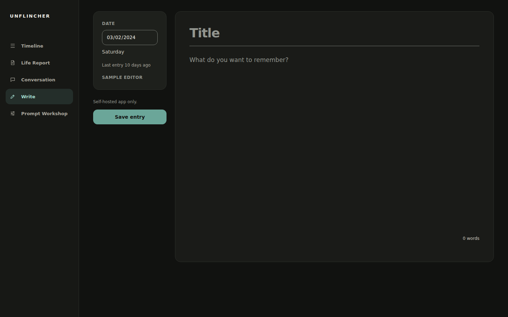

Interactive demo
Sample dataThe interactive logic runs in your browser on fictional data. After the page assets load, it requests only the committed sample file. It performs no model calls, tracking, cookies, storage, or writable operations. Saving, generation, and live conversations are available only in the self-hosted app. The public site is hosted on GitHub Pages and is subject to GitHub's platform logging and privacy practices.
Explore six views




The interactive controls need JavaScript. The screenshots above show the six views.
The self-hosted app stores journal data in your local SQLite database. Depending on the feature, generation can send either the full Journal Archive or an as-of entry context containing the target and earlier entries, plus the active prompt or draft instructions, Conversation history, and the current message through GitHub Copilot. Read the exact transmission list on the home page.
Read the product story on the home page or view the source on GitHub.